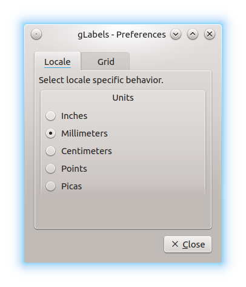

Customizing gLabels
To configure gLabels, choose Edit ➡ Preferences. The Preferences dialog contains two tabbed sections:

Locale
Units
Use this radio button group to specify your preferred units. Select one of the following options:
Inches
Use Inches.
Millimeters
Use Millimeters.
Centimeters
Use Centimeters.
Points
Use points (1 point = 1/72 in = 0.352778 mm).
Picas
Use picas (1 pica = 1/6 in = 4.512 mm = 12 points).
Default: Inches.
Grid
Here you can configure the appearance of the grid, which can be toggled with View ➡ Grid. You can configure whether the origin of the grid is in the Top left corner or in the Center of the template. Besides that, the Spacing can be increased or decreased as desired. Click on Reset to reset the spacing to the default value.